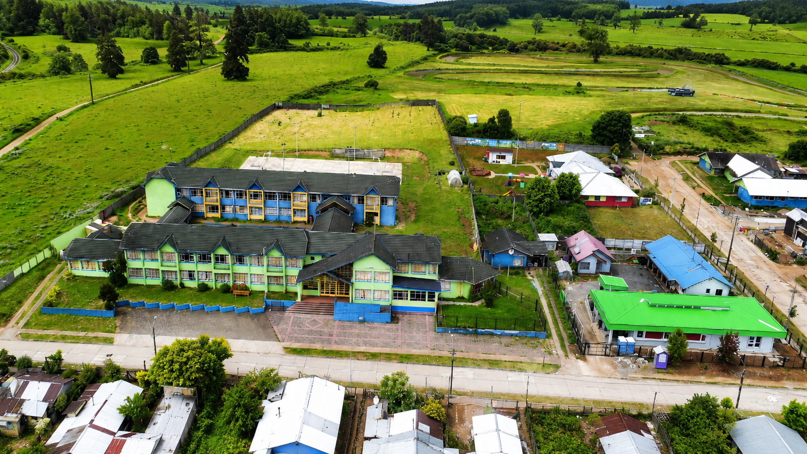

El Requerimiento
El Colegio Bertoldo Hofmann Kahler, ubicado en la ciudad de Purranque, nos solicitó una intervención masiva y estructurada para su flota de ordenadores. El objetivo era revitalizar el rendimiento tecnológico tanto para los docentes como para los estudiantes en el laboratorio de computación.
Se nos encomendó el formateo, particionamiento y configuración de un total de 30 computadores, divididos estratégicamente entre 23 equipos de laboratorio (uso intensivo por estudiantes) y 7 laptops exclusivas para los profesores.

Colegio Bertoldo Hofmann Kahler · Purranque, Región de Los Lagos
La Solución KuyénDev
Ejecutamos un trabajo estandarizado bajo protocolos estrictos para garantizar durabilidad y seguridad. Todas las terminales recibieron una optimización base orientada a alargar la vida útil del hardware y hacerlos notoriamente más rápidos.
Intervención General — 30 Equipos
- Formateo y Particionamiento: Instalación de sistema operativo limpio con partición del disco duro configurada según los requerimientos solicitados por la dirección del colegio.
- Despliegue de Software Base: Instalación de utilidades esenciales y Microsoft Office 2024 con activación permanente para asegurar la continuidad del trabajo administrativo y pedagógico.
- Optimización de Rendimiento: Aplicación de ajustes a nivel de sistema operativo para maximizar la velocidad de respuesta, prolongando la vida útil de los equipos.
Seguridad Avanzada en Laboratorio — 23 Equipos
Para el laboratorio utilizado constantemente por los alumnos, la seguridad y el mantenimiento a largo plazo son críticos. Implementamos medidas adicionales para evitar daños por mal uso:
- Congelamiento del Sistema: Configuramos un software que restablece el equipo a un punto seguro predefinido cada vez que se reinicia. Esto hace imposible el corrompimiento del sistema operativo por la instalación accidental o intencionada de virus o malware por parte de los estudiantes.
- Filtro de Contenido: Implementación de bloqueo estricto de páginas con contenido para mayores de 18 años (+18) a nivel de sistema.
El Resultado
Entregamos 30 equipos que no solo funcionan más rápido, sino que poseen una estructura a prueba de fallos en el área estudiantil. Los profesores ahora cuentan con las herramientas modernas necesarias para su labor, y la institución se ahorra cientos de horas en soporte técnico correctivo gracias a la protección por congelamiento.
Vista del sistema finalizado tras la optimización y configuración completa